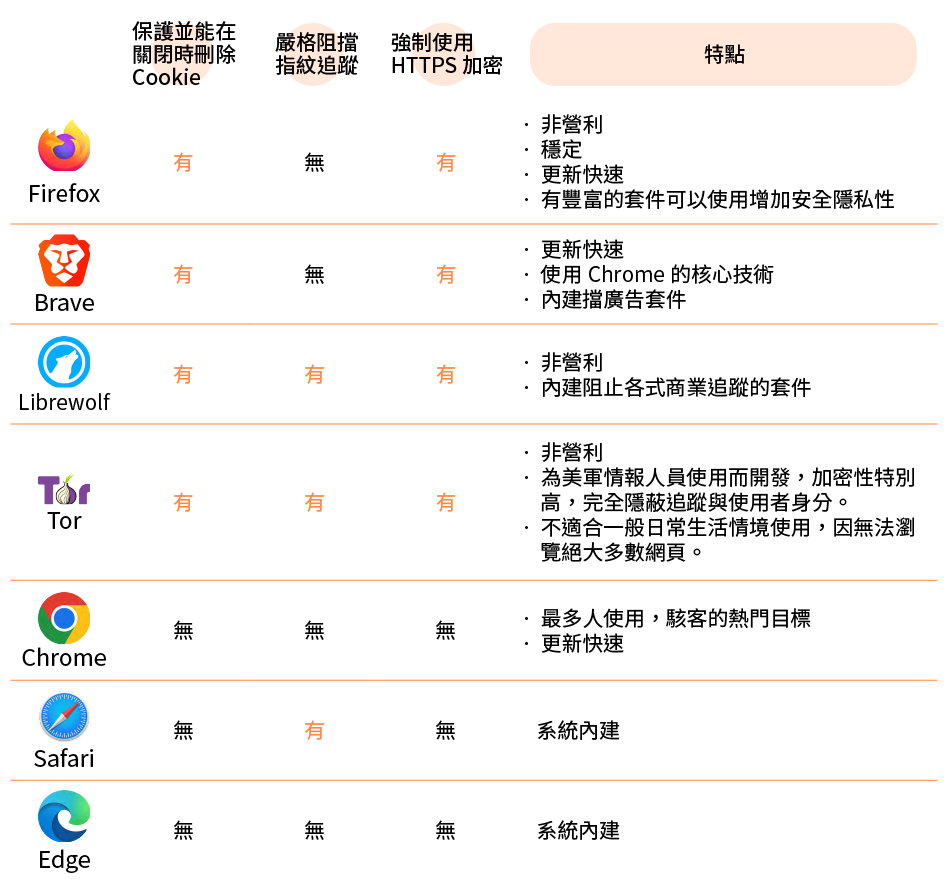

案例
-
你知道在個案故事裡，小明有哪些風險是因為瀏覽器使用習慣而造成的嗎？想好之後，再往下對答案喔！
- 小明的工作帳號和個人帳號都使用同一台筆電、同一個瀏覽器，也沒有設定不讓瀏覽器記憶自己的搜尋紀錄，所以小明工作時查詢的紀錄，讓廣告商判斷他對人權議題有感，因此小明進行私人的購物、娛樂等搜尋時，會讓他看到與工作相關的廣告。
- 承上述使用習慣，小明使用同一個瀏覽器開發的導航服務，因此同網路集團得以掌握小明每日通勤路線、工作查訪地點。
- 小明在免費小說網站建立帳戶，讓瀏覽器記住自己的帳號密碼，帳號密碼儲存在瀏覽器內不是安全操作，帳號密碼資訊容易外洩或遭惡意擷取。
- 免費小說網站沒有 HTTPS 加密連線，他在此瀏覽、輸入的內容（包含登入頁面時的密碼），很容易在網路傳輸過程中被人看光光。
答案：
概論
-
瀏覽器就像我們通往網路世界的「門戶」，我們使用瀏覽器進入網路世界搜尋資料、與人交談甚至觀看影片；同時，現代的網站也盡其所能地收集使用者資訊，用以賺取廣告利潤，這不僅是行之有年的商業行銷基礎功能，有些不安全、惡意的網站，甚至會側錄使用者輸入的敏感資訊，或是竊取瀏覽器已經儲存的瀏覽紀錄、帳號密碼，藉此進行數位攻擊。以下是幾個使用瀏覽器必須注意的威脅或風險：
- Cookie，背後是大大的隱憂
- 數位指紋追蹤技術（Browser fingerprinting）：偷聽對話的手機、偷窺生活的網路
- HTTP v.s. HTTPS: 一字之差，風險暴增
- 如何比較瀏覽器？
- 盡量使用瀏覽器打開網頁，避免直接安裝軟體到電腦
- 避免在手機或平板的社交軟體內直接瀏覽網頁
- 自動啟用無痕模式的瀏覽器 Firefox Focus
- 不要將密碼交給瀏覽器管理
什麼是 Cookie ? Cookie 在這裡並非指餅乾，而是一種會將存取該網站的使用者資訊加以記錄，並儲存在電腦或手機瀏覽器中的機制。
為何大部分網站只要輸入一次帳號密碼，之後就可以不用再頻繁登入？ 為了避免使用者每次登入同一網站都要重新輸入個人資訊的困擾，現在絕大多數網站會使用 Cookie 技術。當你首度造訪網站，通常會被詢問是否開啟 Cookie，如果同意，代表使用這個網站會讓你的各式資訊被記錄下來。
這個技術就像沿路撒餅乾 （Cookie） 屑記錄你的足跡，並將使用者登入網站的帳號資訊、購物車清單、去過哪些網站的瀏覽紀錄，甚至是上傳的圖片、影音檔案，全部暫時存放在瀏覽器軟體在電腦裡的某個資料夾。
Cookie 相當方便，但它也可能被濫用，例如你的網站瀏覽紀錄，會成為廣告商了解你的依據，包括最近去過哪裡、需要什麼、使用過哪些網路服務。可能你只是搜尋了一次「蘋果電腦」，接下來所有你在網站看到的廣告都會問你是不是想買電腦、要不要買更多周邊產品？如果 Cookie 未加密，駭客甚至可以輕易地利用你的 Cookie 偽造身分登入服務。
什麼都還沒輸入，但是網站已經知道你的位置、語言、正在使用的裝置？
當你使用瀏覽器，瀏覽器就能得知你使用的特定裝置資訊、作業系統、瀏覽器、螢幕大小、時區、字體、語言等資訊——這一整組資訊成為每個使用者的數位指紋。許多廣告商會使用追蹤器蒐集網站使用者的數位指紋。數位指紋追蹤技術比 Cookie 更過分的是，它甚至未徵詢你的同意就不斷記錄上述資訊。
現在有許多網站，它們同屬一家公司，或是不同公司基於某些合作協定，可彼此分享使用者資料。例如 FB 與 IG 都屬於 Meta 公司，或是 Google 搜尋引擎與 Chrome 瀏覽器同屬一家公司。你瀏覽過的網站越多，追蹤器越能比對你的數位指紋 （使用者的特定裝置和瀏覽器特徵） 與 Cookie （去過的網站及瀏覽內容） ，廣告商對你的認識也就越多。這些資訊讓廣告商能對你精準投放更可能說服你的廣告，若政府或極權組織透過公權力獲取了異議人士的數位指紋等資料，也就能鎖定他們的網路身分，並進一步推敲出真實身分與位置。
當你瀏覽網站時，儘管網站會收集你的 Cookie 或數位指紋追蹤，然而，現在大部分網站都是HTTPS，S 是 Secure 的縮寫，表示網站具加密保護，也就是說你只讓網站方能夠知道你在那裡進行瀏覽，網路上其他陌生人不會知道。
而沒有加密保護的 HTTP 網站，你只要一連上，就如同立即同意開啟網路直播鏡頭、打開擴音般，在網路上廣播你的各種動作與資訊，數位容貌一覽無遺。這種無加密保護的網站，就有可能讓你在網路世界曝光，除了你以外的任何人都可以大肆蒐集資料之外，更有入侵電腦、監視你生活的可能。
如何辨別這樣的網站呢 ? 你在瀏覽網站時，有時會收到不安全連線的警告，網址左方會顯示鎖頭被劃掉的符號，如下圖：

這表示該網站與你的連線過程沒有提供加密保護，若繼續連線到這種沒有加密保護的 HTTP 網站，在網站上的瀏覽行為、輸入內容、滑鼠移動位置、輸入的帳號密碼或金融資料，等於毫不遮掩地分享給網路上的任何人——可能是在同一間會議室、教室、咖啡廳、機場中使用同一個 wifi 的其他人，其中如有不懷好意者，他們不費吹灰之力就能拿到你的資料，然後不當利用。注重安全及隱私的使用者絕對要避免上述情形，因此最好要在瀏覽器就強制開啟 HTTPS ，才能保障傳輸過程有加密保護，不至於因一次疏忽，使關鍵資料外流。
當你希望自己或同事可以防堵以上洩露資訊的管道，尤其是別讓惡意監控者可以竊取工作過程的內容，那就必須嚴格挑選瀏覽器。請見我們以下的比較表：
總之，「別將雞蛋放在同一個籃子，瀏覽器就是那個籃子！」
當然，只要你願意多花時間，前述的每個瀏覽器都有額外加裝外掛、提升保護能力的空間，成為萬用的瀏覽器。不過，我們都知道不該把所有雞蛋都放在同一個籃子裡，承載我們重要數位資料的瀏覽器亦然。如果只用同一個瀏覽器進行生活娛樂、日常工作、機密通訊的所有事情，那就仍有可能因為一個被駭客發現的漏洞導致全盤皆失。
真正能分散風險的做法，是將不同性質與需要的事情交給不同的數位裝置，但尋常人在經費有限的情況下，很難分別為了生活娛樂、日常工作、機密通訊購買三個不同的設備。即使買得起，也很難帶著它們移動。
因此，將這些不同性質與需要的事情分別在不同的瀏覽器上頭使用，是個折衷的做法。例如，最無關緊要的生活娛樂交給瀏覽器Ａ、日常工作處理的業務只在瀏覽器Ｂ進行、僅在需要進行機密通訊的時候開啟瀏覽器Ｃ。這樣就能簡單分割你在網路上各處留下的足跡，不會累積在同一個瀏覽器裡面，也不會輕易被同時監視多個網站的追蹤器將你的娛樂帳號、工作帳號、機密帳號辨識為同一個人。
可用工具
市面上瀏覽器非常多樣，了解並挑選一個符合自己需求且注重隱私與安全的瀏覽器，是非常的重要事情。我們來看看如何挑選適合自己的瀏覽器吧！
以下是台灣常見的瀏覽器選項：
從小明的案例來看，輕忽瀏覽器的安全性，輕則個人資料被網站收集、使用者的數位足跡遭洩露，重則導致帳號、密碼、金融資訊被竊，甚至瀏覽畫面、傳輸的對話內容被監控。
如同在路上跑的交通工具，速度快並不代表安全，最多人用的瀏覽器也不見得適合須注重安全與隱私的公民團體。為了讓公民團體從瀏覽器的使用就具備基礎數位防禦能力，本節介紹幾個格外強調隱私與安全的瀏覽器，它們都符合開放程式原始碼的規範，所有使用者都可以看見程式背後運作的規則，一方面可供所有人檢視其運作漏洞，另一方面也讓使用者可按照自己的需要改造出不同功能的版本； 尤其是 Firefox、 LibreＷolf、
LibreＷolf、 Tor 都是非營利組織或網路社群志工開發並維護的軟體，它們相對不受廣告利益的限制，並且專注於保護使用者安全。
Tor 都是非營利組織或網路社群志工開發並維護的軟體，它們相對不受廣告利益的限制，並且專注於保護使用者安全。
另外， Chromium 是 Google 為發展 Chrome 所釋出的開源軟體，以 BSD 授權條款等數種授權發行，有開放其核心供其他廠商開發出基於 Chromium 的瀏覽器。
我們在電腦上造訪各種網站時，經常被詢問是否要另外下載特定軟體並安裝在電腦或手機裡面，例如 Facebook Messenger, Slack, Discord 或所有的郵件軟體（例如 outlook）這些經常用於工作時的通訊軟體。事實上，經由瀏覽器使用這些通訊服務，能確保這些軟體只能在瀏覽器這個外殼裡面活動，不會輕易危及裝置的其它功能。直接在你的裝置內安裝，反而可能另外提供軟體他們錄製螢幕畫面、直接存取資料夾內容，甚至是操作其它已安裝軟體的權限，並不是最安全的做法。
同樣的，我們平常在手機或平板使用各式社群平台軟體時，經常會點擊連結後直接在軟體內進行瀏覽，例如直接點開朋友在通訊軟體傳來的購物網站連結、然後登入進行購買。但這其實提供了軟體直接側錄我們一切輸入內容的機會，一旦輸入其它服務的帳號密碼，或是金融資訊，都會直接被軟體獲取。因此也建議盡可能在手機或平板內複製連結後，改用前述的開源與安全軟體進行瀏覽。
有些人可能聽過或使用過瀏覽器的無痕模式，在公共或陌生的電腦使用時，可以增加一點瀏覽安全。按照類似的思路，這邊還推薦一個可以在手機或平板下載的Firefox Focus，這是一款延伸自 Firefox 的瀏覽器，但它不只會阻擋追蹤，每次關閉軟體之後都會刪除瀏覽紀錄、Cookie。很適合用來在手機或平板開啟網頁、看完之後就關掉，並且毫無負擔地甩掉大部分的追蹤行為。
最後，無論你使用哪一款瀏覽器，通常都會在輸入帳號密碼時候被詢問是否將密碼交給瀏覽器管理，下次輸入的時候可以直接由瀏覽器貼上。對於注重安全或隱私的人而言，最好別這麼做。這等於直接將你的密碼放在瀏覽器裡面，一旦瀏覽器的防線被駭客穿過，那就可以一次打包你的所有帳號密碼。如果有需要管理眾多帳號密碼，建議另外使用密碼管理器軟體，可參考本手冊接下來介紹的 KeepassXC。
下載/安裝流程
若使用電腦，前述注重隱私的
Firefox
Brave
Librewolf
Tor
四種軟體都只建議從官方網站下載，即
記得選擇符合自己作業系統（Windows、MacOS）的版本下載，直接點擊就可以開始安裝。千萬不能從任何免費軟體介紹網站下載，沒有辦法保證這些安裝檔案在離開官方網站之外是安全的。
如果使用的是手機或平板等行動裝置，只建議 Android 裝置從 Google Play 商店或 iOS 裝置的 App Store 直接搜尋瀏覽器軟體名稱並下載安裝。因為這些由官方管理的商店會定期檢查檔案的安全，強烈不建議從其它地方下載安裝檔案再移入裝置裡面使用。
技術支援/求救方法
以上介紹的開源與安全瀏覽器，都有官方提供的疑難解答平台。原則上 Firefox 對於中文使用者最為友善，而且有相對豐富的中文志工可以回應各式問題。但是目前的自動翻譯功能已經日漸進步，願意嘗試新軟體的話， Librewolf 其實有更完整的隱私與安全保護功能，值得一試。
| 疑難解答平台 | 語言 | |
|---|---|---|
Firefox |
Link | 繁體中文 |
Brave |
Link | 英文 |
|
Librewolf |
Link | 英文 |
Tor |
Link | 簡體中文 |
如果對本文的介紹有任何疑義，也可以聯繫 hi@ocf.tw 開放文化基金會。
結語
瀏覽器是我們在電腦、手機裝置當中造訪各式網站時候的交通工具， 如同現實的交通工具，速度快並不代表安全，最多人用的瀏覽器也不見得適合注重安全與隱私的公民團體。本文即是介紹注重隱私、安全且開放原始碼給所有人檢視的瀏覽器，可以從基礎提升公民團體的數位防禦能力。
例如以下這些瀏覽器，都是格外強調隱私與安全的軟體：
| 名稱 | 內容 |
|---|---|
| Firefox | 非營利組織開發的軟體 |
| Brave | 強調隱私的商業瀏覽器 |
| Librewolf | 由志工開發維護的非營利軟體 |
|
Tor
|
由志工開發維護的非營利軟體 |